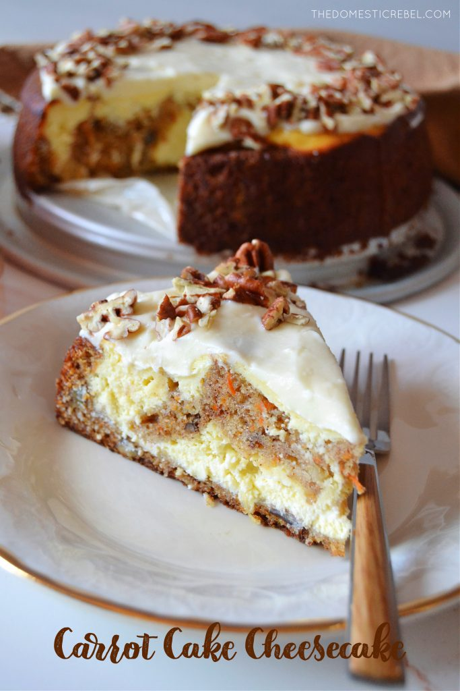

Carrot Cake Cheesecake
Disclaimer: This is not my recipe. It was copied from the source
credited below for the purpose of practicing site building.

Credit: The Domestic Rebel
Ingredients
For the Cheesecake:
- 16oz cream cheese, softened
- 2/3 cup granulated white sugar
- 2 tsp all-purpose flour
- 2 large eggs
- 2 tsp pure vanilla extract
- 1/2 cup sour cream
For the Carrot Cake
- 1/2 cup vegetable oil
- 1/3 cup crushed pineapple, drained
- 2/3 cup granulated white sugar
- 1/3 cup lightly packed light brown sugar
- 2 large eggs
- 1 tsp pure vanilla extract
- 1 1/2 tsp ground cinnamon
- 1/4 tsp ground nutment
- 1 1/4 cups all-purpose flour
- 1/2 tsp baking powder
- 1/4 tsp salt
- 1 1/4 cups finely grated carrots
- 1/3 cup coarsely chopped pecans
For the Frosting and Topping
- 4oz cream cheese, softened
- 4 Tbsp unsalted butter, softened
- t tsp pure vanilla extract
- cup confectioners' sugar
- 2/3 cup coarsely chopped pecans
Instructions
- Preheat oven to 350 degrees F. Grease a 9" round
springform pan with cooking spray and set aside.
- First, make the cheesecake mixture: in the bowl of a
stand mixer, cream together the cream cheese,
granulated sugar and flour together with the paddle
attachment until smooth and creamy, about 1 minute.
Scrape down the bottom and sides of the bowl. Add in the eggs, one
at a time, followed by the vanilla extract and sour cream,
mixing well. Scrape down the bottom and sides of the
bowl as needed. Mixture will be thin. Forecefully tap the
bowl against the countertop for about 30 taps to pop
any air bubbles. Set aside.
- For the carrot cake mixture: In a large bowl, whisk
together the vegetable oil, crushed pineapple,
granulated sugar, brown sugar, eggs, and vanilla extract
together until combined, about 30 seconds. Add in the
spices, flour, baking soda, baking powder, and salt and
whisk until just barely combined but still streaks of flour
remain. Lastly, fold in the grated carrots and chopped
pecans and fold in until ocmbined. Tap this bowl
forcefully against the countertop about 30 taps to pop
any air bubbles as well.
- For assembly: First, pour about 1½ cups of the carrot
cake batter into the bottom of the greased springform
pan and spread into an even layer. Then, add about 1/2
of the cheesecake mixture in dollops. Do not spread or
swirl. Next, add the remaining carrot cake batter,
followed by the remaining dollops of cheesecake batter.
Resist the urge to spread or swirl. I like to dollop the
cheesecake batter on rather than pour it on in one big
glob; it covers more evenly this way.
- Bake for 60-65 minutes or until done (if the center jiggles
very slightly, that is alright). I recommend tenting the pan
around the 40-minute mark with foil to prevent from excessive
browning of the cheesecake. Cool for about 1 hour, then cover
with plastic wrap or foil and refrigerate for about 6 hours,
or overnight, before frosting.
- For the frosting: In a medium bowl, beat together the cream
cheese, butter, and vanilla extract together with a handheld
electric mixer until smooth. Add in the confectioners' sugar
and mix until combined.
- Spread the frosting evenly over the cheesecake. Garnish the
rim of the frosted cheesecake with chopped pecans. Store any
leftover cheesecake in the fridge.